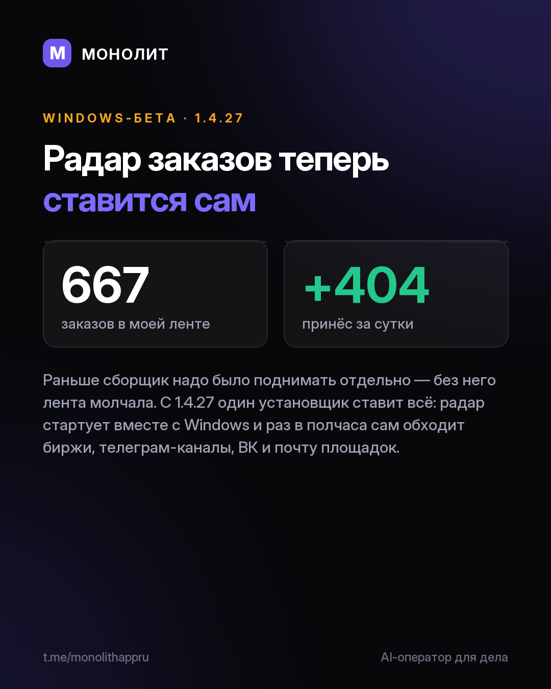

Дневник разработки · 30.08.2026
1.4.27 — радар заказов ставится вместе с приложением

Радар заказов теперь ставится сам.
Раньше сборщик надо было поднимать отдельно, и без него лента «Рынка» молчала. С 1.4.27 один установщик ставит всё: радар стартует вместе с Windows, сам находит приложение и раз в полчаса обходит биржи, телеграм-каналы, ВК и почту площадок.
В моей ленте сейчас 667 заказов, за последние сутки радар принёс 404. Монтаж, съёмка, цветокор, SMM — раскладывает по сферам и отделяет заказчиков от таких же исполнителей.
Новая площадка: заявки с Авито приходят карточками с автором и телефоном, фильтр «Авито» в подборках.
И про безопасность: сессия Telegram хранится только в зашифрованном виде, контакты в журнале радара скрыты масками.
Установленное приложение обновится само. Первый раз: monolithapp.github.io
МОНОЛИТ — учёт заказов, клиентов и денег одной фразой. Windows и Android, бесплатная бета.
Скачать Читать канал